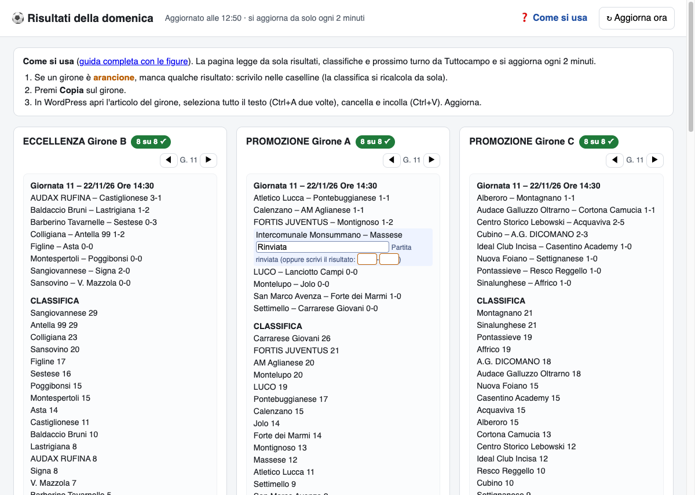
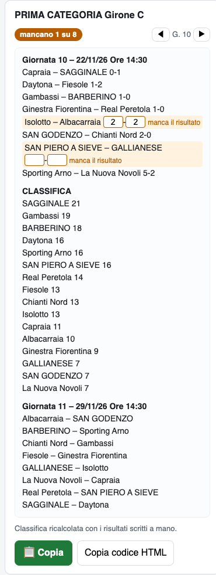
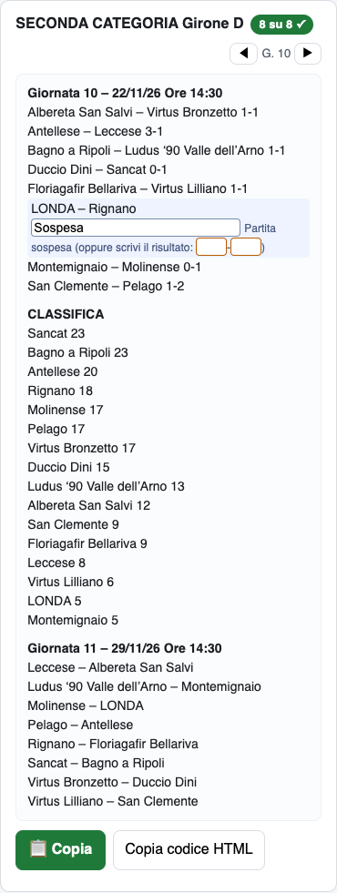

⚽ Risultati della domenica: come si usa la pagina
Guida per i redattori di Radio Mugello · come aggiornare in pochi minuti gli articoli dei gironi (risultati, classifica e prossimo turno)
📄 Scarica la guida in PDF da stampare · ⚽ Vai alla pagina dei risultati
In breve. Non si ricopia più niente a mano. La pagina prende risultati, classifica e prossimo turno da Tuttocampo e prepara il testo di ogni girone già scritto come sul nostro sito: le squadre mugellane in maiuscolo, le partite in ordine alfabetico, la classifica e la giornata successiva.
Per ogni girone si preme Copia e si incolla nell'articolo di WordPress. Per tutti gli 8 gironi bastano circa 10 minuti.
L'indirizzo è questo (salvatelo nei preferiti):
https://calciomugello.it/redazione-lhjwyli7j56q/incolla/
La pagina è riservata alla redazione: non c'è nessun link che porta lì e Google non la mostra. Il link non va pubblicato né girato fuori dalla radio.
Prima volta sul PC della radio
Aprire la pagina e salvarla nei preferiti
- Aprite Chrome o Edge e scrivete l'indirizzo qui sopra.
- Premete Ctrl + D e salvatelo nella barra dei preferiti con il nome «Risultati della domenica».
- Da quel momento basta un clic. Non c'è niente da installare e non serve nessuna password.
La domenica, passo per passo
Aprite la pagina quando le partite sono finite (dalle 17 circa)
I gironi si caricano da soli in pochi secondi, uno dopo l'altro. In alto compare «Aggiornato alle…». La pagina si aggiorna da sola ogni 2 minuti. Per avere subito gli ultimi risultati premete ↻ Aggiorna ora.

Guardate il colore accanto al nome del girone
| Cosa vedete | Cosa significa e cosa fate |
|---|---|
| 8 su 8 ✓ | Ci sono tutti i risultati. Passate al punto 5 e copiate. |
| mancano 2 su 8 | Tuttocampo non ha ancora tutti i risultati. Aspettate qualche minuto oppure scriveteli voi (punto 3). |
| non letto | Tuttocampo in quel momento non risponde. Premete ↻ Aggiorna ora fra un minuto. |
Nella prima riga di ogni riquadro c'è il numero della giornata, per esempio G. 11. Se è quella sbagliata, cambiatela con le frecce ◀ ▶.
Se manca un risultato, scrivetelo voi

Le partite senza risultato sono evidenziate in arancione e hanno due caselline. Scrivete i gol della squadra di casa nella prima e quelli della squadra ospite nella seconda, prendendoli dal gruppo WhatsApp dei risultati o dalla diretta.
- La classifica si ricalcola da sola con il risultato che avete scritto. Sotto compare la scritta «Classifica ricalcolata con i risultati scritti a mano».
- Se la pagina si aggiorna, quello che avete scritto non si perde.
- Quando arriva il risultato vero da Tuttocampo, le caselline spariscono da sole.
Partite rinviate o sospese

Le riconoscete dal riquadro azzurrino. La pagina scrive già «Rinviata» o «Sospesa», e quelle partite non contano come risultati mancanti.
- Nella casella lunga potete completare la scritta, per esempio: «Sospesa per impraticabilità di campo al 45′ (0-1)».
- Se la partita è stata giocata e Tuttocampo sbaglia, scrivete il risultato nelle due caselline piccole.
Prima di copiare, un'occhiata di 30 secondi
- La data e l'ora della giornata, nella prima riga in grassetto. La pagina mette il giorno in cui si gioca la maggior parte delle partite. Per la Terza Categoria, che spesso gioca anche il sabato, controllate che sia la data che usiamo di solito.
- Le penalizzazioni. La pagina scrive (-1 p.) solo se Tuttocampo ha già tolto i punti. Se sapete di una penalizzazione che non compare, aggiungetela in WordPress dopo aver incollato.
- Le squadre a pari punti sono nell'ordine di Tuttocampo. Se da noi si usa un ordine diverso, sistematelo in WordPress.
Premete «📋 Copia»

Il pulsante verde in fondo al riquadro copia tutto il testo del girone: risultati, CLASSIFICA e prossimo turno. Per un paio di secondi la scritta diventa «✓ Copiato».
Incollate nell'articolo del girone in WordPress
Gli articoli dei gironi sono sempre gli stessi e ogni domenica si aggiornano. Il testo nuovo prende il posto di quello vecchio.
- In WordPress andate su Articoli e aprite l'articolo del girone, per esempio «PROMOZIONE Girone C».
- Cliccate dentro il testo, poi premete Ctrl + A due volte: la prima volta si seleziona il paragrafo, la seconda tutto l'articolo.
- Premete Canc per cancellare il testo vecchio.
- Premete Ctrl + V per incollare quello nuovo. Escono tre paragrafi: la giornata con i risultati, la CLASSIFICA e la giornata successiva.
- Date un'occhiata e premete Aggiorna.
Poi tornate alla pagina dei risultati e passate al girone successivo.
Se l'incolla viene male (testo tutto attaccato o grassetti spariti), usate la strada B, che funziona sempre:
- Nella pagina dei risultati premete «Copia codice HTML» invece di «Copia».
- In WordPress aprite il menu ⋮ in alto a destra e scegliete Editor di codice (oppure premete Ctrl + Maiusc + Alt + M).
- Cliccate nel riquadro del testo, premete Ctrl + A, poi Ctrl + V.
- Premete Esci dall'editor di codice e poi Aggiorna.
Gli 8 articoli da aggiornare
- ECCELLENZA Girone B
- PROMOZIONE Girone A
- PROMOZIONE Girone C
- PRIMA CATEGORIA Girone C
- SECONDA CATEGORIA Girone D
- SECONDA CATEGORIA Girone F
- SECONDA CATEGORIA Girone M Ravenna
- TERZA CATEGORIA Girone B Firenze
I riquadri della pagina sono nello stesso ordine.
Se qualcosa non va
| Problema | Cosa fare |
|---|---|
| Un risultato di Tuttocampo è sbagliato | Incollate lo stesso e correggete quel numero direttamente in WordPress prima di premere Aggiorna. Ricordatevi di controllare anche i punti in classifica delle due squadre. |
| La giornata mostrata non è quella giusta | Usate le frecce ◀ ▶ nel riquadro del girone. |
| Un girone resta rosso, «non letto» | Tuttocampo è momentaneamente irraggiungibile. Riprovate con ↻ Aggiorna ora dopo un minuto. Se non si sblocca, per quel girone si fa come prima, a mano. |
| Il pulsante Copia non copia | Usate «Copia codice HTML» e la strada B. In alternativa selezionate il testo del riquadro con il mouse e copiatelo con Ctrl + C. |
| Il nome di una squadra è scritto diversamente da come lo scriviamo noi | Correggetelo in WordPress e avvisate Fabio Ceseri: lo sistema una volta per tutte. |
| Ho scritto un risultato a mano sul PC sbagliato | I risultati scritti a mano restano solo sul computer e nel browser dove li avete scritti. Su un altro PC vanno riscritti. |
Da sapere
- Da dove arrivano i dati: dai riquadri ufficiali di Tuttocampo per ciascuno dei nostri 8 gironi. Eccellenza e Promozione di solito sono complete pochi minuti dopo il fischio finale. Seconda e Terza a volte arrivano più tardi, anche dopo le 18: in quei casi servono le caselline.
- La classifica è quella di Tuttocampo, più i risultati che avete scritto a mano. Resta valido il controllo di sempre: se un numero non torna, vale quello che sapete voi.
- Non serve nessun computer acceso altrove: la pagina funziona su qualunque PC con Internet, anche da casa o dal telefono.
Per dubbi o problemi: Fabio Ceseri · Guida aggiornata al 24 novembre 2026